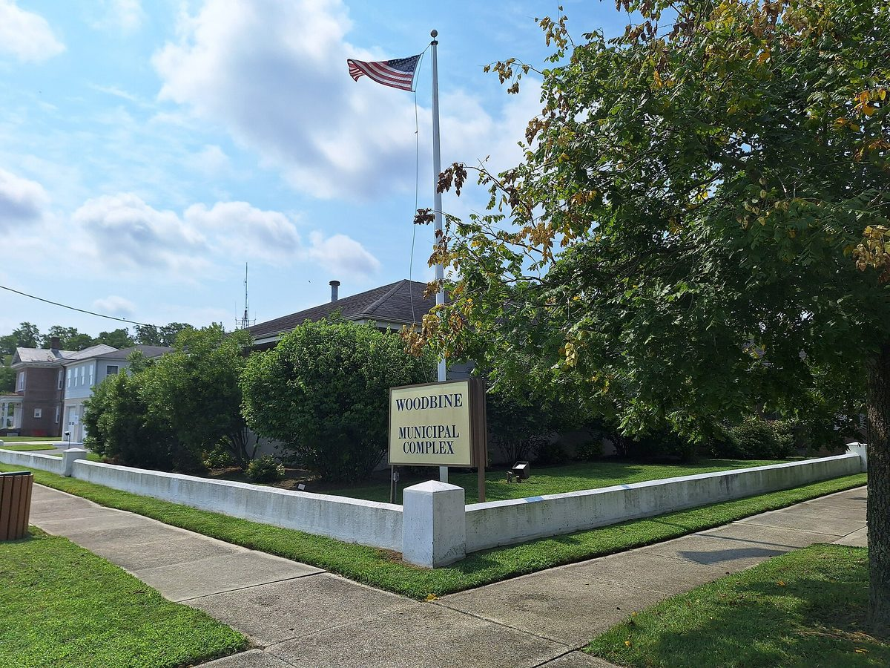

미국 뉴저지 우드바인, 덮개 없이 남아 있던 옛 매립지에 10MW 태양광 추진…6,000만 달러 넘는 사업 착공 앞둬

개발사 CEP 리뉴어블스가 설비 소유하고 면은 땅 임대…시장은 가동 전 가입한 주민·사업장이 소득 제한 없이 요금 20~30% 할인받고 면은 30년간 해마다 약 15만 달러 임대 수입 얻을 것으로 내다봐
미국 뉴저지주 케이프메이카운티의 작은 자치단체 우드바인 보로(Woodbine)가 문을 닫은 뒤 수십 년 동안 덮개(cap) 없이 남아 있던 옛 면 매립지에 10MW 규모 태양광 발전소를 세우는 사업이 착공을 앞두고 있다. 사업비는 6,000만 달러가 넘고, 공사는 2027년 1월 초 시작해 약 18개월 걸릴 것으로 예상된다. 설비는 개발사 CEP 리뉴어블스(CEP Renewables)가 소유·관리하고 면은 땅을 빌려주는 구조이며, 윌리엄 피콜리츠키(William Pikolycky) 시장은 처음 개발사였던 넥스앰프(Nexamp)가 매립지 덮개 공사의 환경 요건을 부담스러워해 개발사가 바뀌었다고 설명했다. 시장에 따르면 가동 전에 가입한 면 안의 주민과 사업장은 소득과 관계없이 전기요금을 20~30% 할인받을 수 있고, 면은 30년 동안 해마다 약 15만 달러의 임대 수입을 얻어 세금을 억제하는 데 쓸 계획이다. 함께 이뤄지는 덮개 공사는 빗물이 쓰레기층으로 스며드는 것을 막는 것으로, 면은 35년가량 납세자 부담 없이 이 공사를 할 길을 찾아왔으며 장기 환경 감시는 이미 쌓아 둔 예치기금으로 맡는다. 피콜리츠키 시장은 할인 대상에 "아무 제한이 없다"며 누구나 받을 수 있다고 강조했다.
시민에너지 관점
35년 동안 손대지 못한 매립지를 덮고 그 위에 10MW 발전소를 세워 면은 임대료를, 주민은 요금 할인을 받는다는 구상은 쓸모없던 공공부지에서 지역 몫을 끌어냈다는 점에서 의미가 있다. 다만 설비가 개발사 소유인 이상 30년 동안 생기는 발전 수익의 상당 부분은 개발사 몫이 되고, 할인율과 임대료도 아직은 시장의 설명 단계다. 루마니아 시비우시가 EU 기금으로 4.8312MW 규모 시 소유 태양광 단지를 계약해 가로등 등 공공시설 전기요금을 상계하기로 한 것처럼, 공공부지 발전소는 지자체와 주민이 직접 소유할 때 이익이 지역에 더 온전히 남는다. 버려진 매립지와 폐부지에 태양광을 세울 때는 임대료와 할인에 머물지 말고 지자체·주민 지분 참여를 계약 조건으로 넣어야 한다.
출처: Press of Atlantic City 2026-10-27 Michael Bautista 원문 보기
米ニュージャージー州ウッドバイン、覆土されないまま残っていた旧埋め立て地に10MW太陽光…6,000万ドル超の事業が着工間近
開発会社CEP Renewablesが設備を所有し町は土地を賃貸…町長は稼働前に加入した住民・事業所が所得制限なく電気料金20〜30%の割引を受け、町は30年間毎年約15万ドルの賃貸収入を得ると見込む
米ニュージャージー州ケープメイ郡の小さな自治体ウッドバイン（Woodbine）で、閉鎖後数十年にわたり覆い（キャップ）のないまま残されてきた旧町営埋め立て地に、10MWの太陽光発電所を建てる事業が着工を控えている。事業費は6,000万ドルを超え、工事は2027年1月初めに始まり約18カ月かかる見通しだ。設備は開発会社CEP Renewablesが所有・管理し、町は土地を貸す仕組みで、ウィリアム・ピコリツキー（William Pikolycky）町長は、当初の開発会社Nexampが埋め立て地の覆土工事に伴う環境要件を負担に感じたため開発会社が替わったと説明した。町長によると、稼働前に加入した町内の住民と事業所は所得に関係なく電気料金の20〜30%の割引を受けられ、町は30年間、毎年約15万ドルの賃貸収入を得て税負担の抑制に充てる計画だ。あわせて行う覆土工事は雨水がごみの層に染み込むのを防ぐもので、町は約35年にわたり納税者の負担なしにこの工事を行う方法を探してきており、長期の環境監視はすでに積み立てた預託基金で賄う。ピコリツキー町長は割引の対象に「何の制限もない」と述べ、誰でも受けられると強調した。
市民エネルギーの視点
35年間手をつけられなかった埋め立て地を覆い、その上に10MWの発電所を建てて町は賃料を、住民は料金割引を受けるという構想は、使い道のなかった公有地から地域の取り分を引き出した点で意味がある。ただ、設備が開発会社の所有である以上、30年間に生まれる発電収益の相当部分は開発会社のものとなり、割引率や賃料もまだ町長の説明の段階にとどまる。ルーマニアのシビウ市がEUの基金で4.8312MWの市有太陽光発電所の契約を結び、街路灯など公共施設の電気料金を相殺するとしたように、公有地の発電所は自治体と住民が自ら所有してこそ利益がより確実に地域に残る。廃止された埋め立て地や跡地に太陽光を建てる際は、賃料や割引にとどまらず、自治体と住民の出資参加を契約条件に盛り込むべきだ。
出典: Press of Atlantic City 2026-10-27 Michael Bautista 原文を読む
美国新泽西州伍德拜恩在长期未封顶的旧垃圾填埋场建10MW光伏…逾6,000万美元项目即将开工
开发商CEP Renewables拥有设备、镇政府出租土地…镇长预计投运前加入的居民和商户不论收入均可享受20%至30%电费折扣，镇政府30年内每年约有15万美元租金收入
美国新泽西州开普梅县的小镇伍德拜恩（Woodbine）将在一处旧镇营垃圾填埋场上建设10MW光伏电站，项目即将开工；这处填埋场关闭后几十年来一直没有封顶覆盖。项目投资超过6,000万美元，预计2027年1月初开工，工期约18个月。设备由开发商CEP Renewables拥有和管理，镇政府只出租土地；镇长William Pikolycky解释说，最初的开发商Nexamp因难以承担填埋场封顶工程的环保要求而退出，开发商因此更换。据镇长介绍，投运前登记加入的镇内居民和商户不论收入高低，都可获得20%至30%的电费折扣，镇政府则在30年内每年获得约15万美元租金，计划用于抑制税负。同步进行的封顶工程可防止雨水渗入垃圾层，镇政府约35年来一直在寻找不增加纳税人负担的施工办法，长期环境监测费用则由已有的托管基金承担。镇长强调，折扣“没有任何限制”，人人都可享受。
市民能源视角
把35年来无从处理的填埋场封顶，再在上面建10MW电站，让镇政府收租金、居民享折扣，这一设想从闲置公共用地中为地方争得了一份收益，有其意义。不过，既然设备归开发商所有，30年间发电收益的相当部分将归开发商，折扣率和租金也还停留在镇长的说明阶段。罗马尼亚锡比乌市利用欧盟基金签约建设4.8312MW市属光伏电站，用来抵扣路灯等公共设施电费；可见公共用地上的电站只有由地方政府和居民直接拥有，收益才能更完整地留在本地。在废弃填埋场和闲置地块上建设光伏时，不应止步于租金和折扣，而应把地方政府和居民入股参与写入合同条件。
来源: Press of Atlantic City 2026-10-27 Michael Bautista 查看原文
Woodbine, New Jersey, nears construction of a 10MW solar farm on an old landfill left uncapped for decades, a project worth more than $60 million
Developer CEP Renewables will own the panels while the borough leases the land; the mayor expects residents and businesses who sign up before start-up to get 20-30% off their bills with no income limits, and the borough to earn about $150,000 a year for 30 years
Woodbine, a small borough in Cape May County, New Jersey, is close to starting work on a 10MW solar farm on its former municipal landfill, which has sat without a cap for decades since it closed. The project will cost more than $60 million, with construction expected to begin in early January 2027 and take about 18 months. The developer, CEP Renewables, will own and manage the installation while the borough leases the land; Mayor William Pikolycky said the original developer, Nexamp, had balked at the environmental requirements of capping the landfill, which led to the change of developer. According to the mayor, residents and businesses in the borough who sign up before the farm starts operating will be able to get a 20 to 30 percent discount on their electricity bills regardless of income, and the borough will receive about $150,000 a year in lease income for 30 years, which it plans to use to hold down taxes. The capping work that comes with the project will stop rainwater from seeping into the buried waste, something the borough says it has spent about 35 years trying to do without burdening taxpayers, and long-term environmental monitoring will be paid for from an existing escrow fund. Pikolycky stressed that there are no restrictions on who can get the discount.
Citizen Energy View
Capping a landfill left untouched for 35 years and building a 10MW plant on top, with lease income for the borough and bill discounts for residents, is worthwhile in that it pulls a local share out of land that had no use. But as long as the developer owns the equipment, a large part of 30 years of generation revenue will go to the developer, and the discount and lease figures are still only the mayor's estimates. Just as the Romanian city of Sibiu has used EU funding to contract a 4.8312MW city-owned solar park whose output will offset the power bills of street lighting and other public facilities, plants on public land keep their benefits more fully in the community when the municipality and residents own them directly. When solar goes onto closed landfills and derelict sites, contracts should go beyond leases and discounts and require equity stakes for municipalities and residents.
Source: Press of Atlantic City 2026-10-27 Michael Bautista Read the original